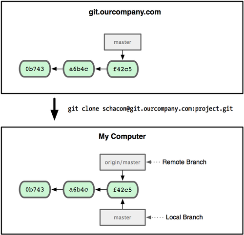
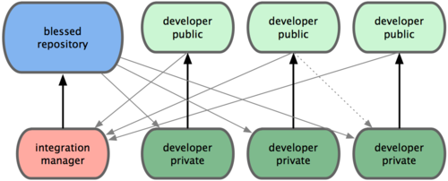

$ git basics
Notwendige Konfiguration
$ git config --global user.name "Philipp Böhm"
$ git config --global user.email "philipp.boehm@igd-r.fraunhofer.de"
Das erste Repository
$ mkdir meinerstesrepo
$ cd meinerstesrepo
$ git init
Initialized empty Git repository in ~/meinerstesrepo/.git/
.git im Wurzelverzeichnis des Projekts. Alle Dateien und Änderungen werden per SHA-1 gehasht.
Die erste Datei
$ cat >> README.md
# Mein erstes git-Repository
Nützliche Infos für andere Entwickler
$ git add README.md
$ git status
# On branch master
#
# Initial commit
#
# Changes to be committed:
# (use "git rm --cached ..." to unstage)
#
# new file: README.md
#
$ git commit -m "Mein erster git Commit"
[master (root-commit) 0ed6244] Mein erster git Commit
1 file changed, 3 insertions(+)
create mode 100644 README.md
$ git status
# On branch master
nothing to commit (working directory clean)
Änderungen an dieser Datei
$ cat >> README.md
## LICENSE
Du kannst hiermit alles machen, was du willst.
$ git diff
diff --git a/README.md b/README.md
index d3c1d07..ed02056 100644
--- a/README.md
+++ b/README.md
@@ -1,3 +1,6 @@
# Mein erstes git-Repository
Nützliche Infos für andere Entwickler
+
+## LICENSE
+Du kannst hiermit alles machen, was du willst.
$ git add .
$ git commit -m "Ein Lizenzhinweis hinzugefügt"
[master 3949ab1] Ein Lizenzhinweis hinzugefügt
1 file changed, 3 insertions(+)
Lokale Operationen
Änderungen rückgängig machen
# Letze Commit-Message ändern
$ git commit --amend
# Letzen Commit rückgängig machen
$ git reset --soft HEAD^
# alternativ mit vorletzter Commit ID
$ git reset --soft 7d2d214a51f84448515
# Änderungen an einer Datei verwerfen
$ git checkout [-f] DATEI
# Alle Änderungen im Working-Dir verwerfen
$ git checkout -f
Unerwünschte Dateien ignorieren
$ gs
# On branch master
# Untracked files:
# (use "git add ..." to include in what will be committed)
#
# README.md~
# test.pyc
.gitignore enthält Dateien die ignoriert werden sollen.
$ cat .gitignore
*~
*.pyc
$ git add .gitignore && git commit -m ".gitignore"
$ git branch
* master
nocheintest
testest
Neuen Branch erstellen
# erste Möglichkeit = umständlich
$ git branch testing
$ git checkout testing
Switched to branch 'testing'
# Ein Shortcut
$ git checkout -b testing
Switched to branch 'testing'

Arbeiten auf dem Branch
$ echo "##Copyright" >> README.md
$ git commit -a -m "Copyright Info"
[testing 6245426] Copyright Info
1 file changed, 1 insertion(+)

Vereinigen von Branches (einfach)
$ git checkout master
Switched to branch 'master'
$ git merge testing
Updating 37f5ef8..6245426
Fast-forward
README.md | 1 +
1 file changed, 1 insertion(+)
Komplizierteres Szenario
Häufig im Zusammenspiel mit mehreren Entwicklern anzutreffen.
Möglichkeit 1: Normaler Merge
$ git checkout master
$ git merge iss53
# Öffnet den Editor und erstellt einen Merge-Commit (C6)

Möglichkeit 2: Rebase mit Merge
$ git checkout iss53
$ git rebase master
First, rewinding head to replay your work on top of it...
Applying: added testest
# Nachfolgend kann ein normaler Merge mit master durchgeführt werden
$ git checkout master
$ git merge iss53
Merge-Konflikte
$ git merge iss53
Auto-merging index.html
CONFLICT (content): Merge conflict in index.html
Automatic merge failed; fix conflicts and then commit the result.
$ git status
index.html: needs merge
# On branch master
# Changed but not updated:
#
# unmerged: index.html
$ cat index.html
<<<<<<< HEAD:index.html
contact: email.support@github.com
=======
contact: support@github.com
>>>>>>> iss53:index.html
$ git commit -a -m "Changed index.html"
Branch Management
# Auflisten aller Branches
$ git branch [ --no-merged ] [ --merged ]
# Löschen von Branches
$ git branch -d BRANCHNAME
# wenn Branch nicht gemerged
$ git branch -D BRANCHNAME
$ git clone https://github.com/hakimel/reveal.js.git
# Dies kopiert das komplette Repo mit History und registriert die URL als Quelle
$ cd reveal.js
$ cat .git/config
[core]
repositoryformatversion = 0
filemode = true
bare = false
logallrefupdates = true
[remote "origin"]
fetch = +refs/heads/*:refs/remotes/origin/*
url = https://github.com/hakimel/reveal.js.git
[branch "master"]
remote = origin
merge = refs/heads/master
# zu einem existierenden Repo wird eine Origin hinzugefügt und das komplette Repo dorthin gepushed.
cd existing_git_repo
git remote add origin git@git.igd-r.fraunhofer.de:mein_cooles_repo.git
git push origin master
Illustration von git clone

# Änderungen von origin/master holen
$ git fetch origin
$ git merge origin
# Shortcut
$ git pull
# lokale Commits nach origin übertragen
$ git push
# Einen Lokalen Brach auf origin veröffentlichen
$ git push origin LOCALBRANCH
# Einen remote Branch löschen
$ git push origin :LOCALBRANCH
Workflow 1

Alle Entwickler arbeiten auf Feature-Branches und pushen in ein gemeinsames Repo.
Workflow 2
Workflow 3

Anwendung: Linux Kernel
# Änderungen sichern
$ git stash
# gesicherte Änderungen anzeigen
$ git stash list
# Änderungen zurückspielen und vom stack löschen
$ git stash pull